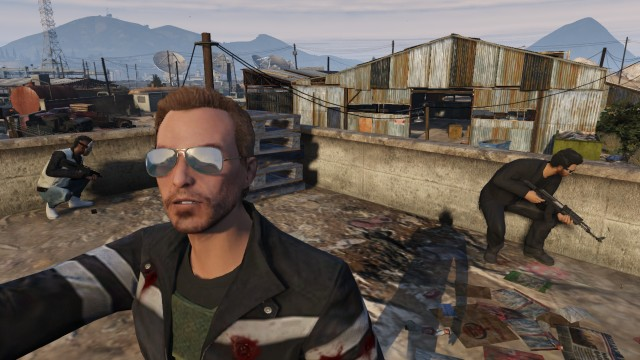

ussen 1 en 4 spelers moeten hun locatie te verdedigen tegen golven van aanvallende NPCs . Elke golf escaleert in moeilijkheden (NPC bewapening en gedrag), hoewel het aantal NPC's niet als de golven vooruitgang doet toenemen.
Als een speler sterft, moeten ze de andere spelers die in leven zijn en zal respawn aan het begin van de volgende golf spectate. Als alle spelers in één ronde sterven voor het bereiken van het eind van golf 10, worden de Survival evenement eindigt en spelers proportioneel betaald, afhankelijk van de golf bereikt. Survival is een unieke activiteit als gevolg van het krijgen van een beloning voor het werk in plaats van succes. Als spelers alle 10 golven voltooien, krijgen ze $ 30.000 per stuk en een Unnatural Selection prestatie / trofee .
Elke survival map is beperkt door onzichtbare "out-of-bounds" zones zowel horizontaal als verticaal dus wat kan lijken om een goede vechten positie zou kunnen leiden tot een diskwalificatie van die golf te zijn.
Alle NPC vijanden niet onmiddellijk paaien aan het begin van de ronde, zijn ze scripted om te paaien in de kaart bij een bepaalde snelheid wat betekent dat wanneer de spelers liggen verspreid over het voortbestaan kaart zone, kan NPC paaien vrijwel direct naast spelers. Door de gescripte broed rate, elk overleving gebeurtenis duurt 25-30 minuten in totaal.
Er zijn 10 aanvalsgolven in elk Survival baan. Een staafdiagram verschijnt in de rechterbenedenhoek van de HUD die de voortgang door de huidige golf. Spelers zullen worden gewaarschuwd wanneer er slechts één NPC links om zo te doden dat ze deze kans om dekking te breken en het verzamelen van pickups, indien nodig kan nemen.
Overleven elke golf geeft spelers 20 seconden aan een pick-ups te verzamelen en voor te bereiden op de volgende golf en kan elke gedode spelers respawn in de baan en hergroeperen met hun teamgenoten. NPCs wel eens laten vallen kleine hoeveelheden contant geld die ook door de spelers worden opgehaald.
Afhankelijk van de golf, zullen verschillende wapens paaien in bepaalde plekken. Health packs en kogelvrije vesten zijn verkrijgbaar bij de start, en weer in het zelfde spawn locaties aan het begin van elke golf. De NPC vijanden zullen ook worden uitgerust met een sterkere wapens door de golf progressie en deze kunnen worden geplunderd door de spelers als de vijanden worden gedood.
